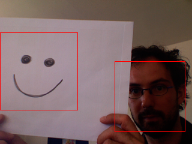

| Name | cascade() | ||
|---|---|---|---|
| Examples | import hypermedia.video.*;
OpenCV opencv;
void setup() {
size( 320, 240 );
opencv = new OpenCV(this);
opencv.capture( width, height );
opencv.cascade( OpenCV.CASCADE_FRONTALFACE_ALT ); // load the FRONTALFACE description file
}
void draw() {
opencv.read();
image( opencv.image(), 0, 0 );
// detect anything ressembling a FRONTALFACE
Rectangle[] faces = opencv.detect();
// draw detected face area(s)
noFill();
stroke(255,0,0);
for( int i=0; i<faces.length; i++ ) {
rect( faces[i].x, faces[i].y, faces[i].width, faces[i].height );
}
}
|
||
| Description | Load into memory the descriptor file for a trained cascade classifier.
Required by the object detection method (see detect()).
While you may use your own cascade description files, this library links as well to a standard family of detection cascades ( It is recommended that you avoid loading the file at each cycle. Available detection cascade flags :
|
||
| Syntax | cascade(file); |
||
| Parameters |
|
||
| Return | None | ||
| Usage | Application | ||
| Related | detect() |